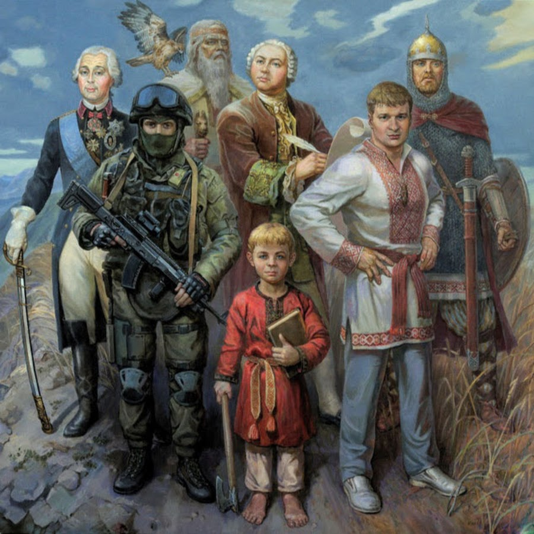
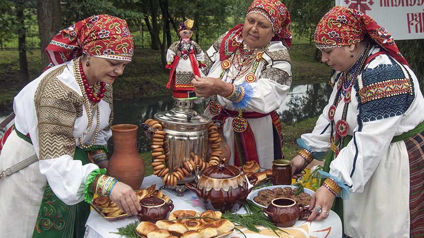
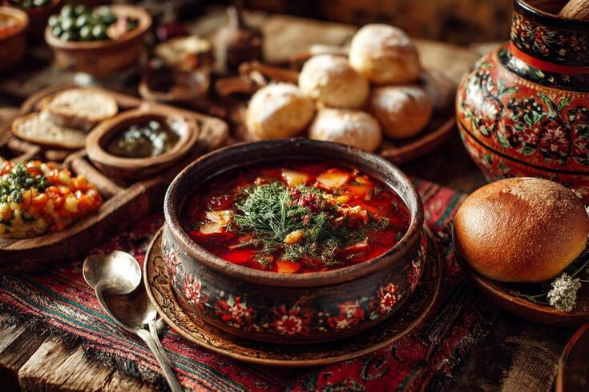

О Русских



Кто такие русские?
Русские, восточнославянский народ, основное население России. Древнерусская народность сформировалась около 11-12 вв. на основе восточнославянских, финно-угорских, балтских и скандинавских народов.
Традиции
Масленица - праздник проводов зимы. Главное угощение — блины. Рождество и Святки - накануне Рождества было принято колядовать — ходить по домам, петь песни и получать угощения. Пасха - к этому празднику пекут куличи, красят яйца, готовят творожные пасхи и освящают их в церкви.
Традиционная кухня
Русская национальная кухня богата разнообразными блюдами, которые отражают исторические традиции, климатические условия и доступные продукты. Многие из них имеют ритуальное значение и были частью праздничного стола. Например: Щи, Борщ, Солянка, Рассольник, Окрошка, Уха.